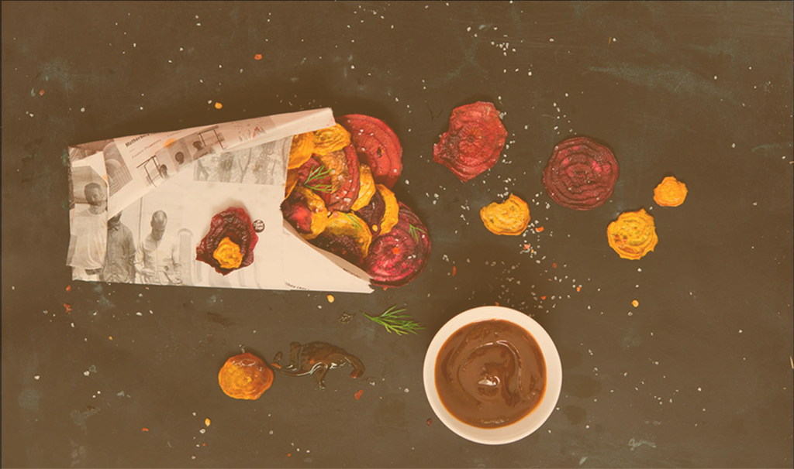

<!DOCTYPE html>
<html>
  <head>
    <meta charset="utf-8">
    <title>Plant Vegan Restaurant</title>
    <!-- VIEWPORT FOR MOBILE -->
   <meta name="viewport" content="width=device-width, initial-scale=1">

   <!-- MAIN CSS -->
  <link rel="stylesheet" href="css/font-awesome.css">
   <link rel="stylesheet" href="css/style.css">
  </head>


  <body>
  <!--MAIN NAV====================================-->
    <header>
        <nav class="mainnav">
        <div class="container">
        <a class="logo" href="index.html"></a>
        <a href="#" class="nav-toggle"></a>
        <ul>
        <li><a class="active" href="index.html">About</a></li>
          <li><a href="#">Menu</a></li>
          <li><a href="#">Gallery</a></li>
          <li><a href="#">News</a></li>
          <li><a href="#">Reservations</a></li>
          <li><a href="#">Contact</a></li>
        </ul>
        <!--SEARCH BAR  -->
        <form class="search">
          <input class="search-input" type="text" placeholder="Search " style="text-align: right"/>
        </form>
        <!--search icon  -->
        <a href="#" class="button-search"> </a>
        <!-- END SEARCH BAR  -->
      </div>
    </nav>

    </header>
  <!--END MAIN NAV----------------------------->


<!--SECTION1:HOME>>>>>>>>>>>>>>>>>>>>>>>>>>>>>>>>-->
<section class=section01>

<!--SLIDESHOW--------------------------------->
  <!-- ============Typo============= -->
  <div class="slideshow-container">
    <div class="head-typo">
      <p>
        Good time & great food
      </p>
     <a href="reservations">book now!</a>
    </div>

  <!-- Main slide----------------->
  <div class="mySlides fade">
    
  </div>

  <div class="mySlides fade">
    
  </div>

  <div class="mySlides fade">
    
  </div>
  <a class="prev" onclick="plusSlides(-1)"><i class="fa fa-chevron-left"></i></a>
  <a class="next" onclick="plusSlides(1)"><i class="fa fa-chevron-right"></i></a>
  <div class="dots" style="text-align:center">
    <span class="dot" onclick="currentSlide(1)"></span>
    <span class="dot" onclick="currentSlide(2)"></span>
    <span class="dot" onclick="currentSlide(3)"></span>
  </div>

</div>
<br>


<!--- content --------------->
<div class="container">
      <div class="welcome">
      <h3>WELCOME TO PLANT</h3>
      </div>
</div>
<div class="line01"></div>
<div class="container">
    <div class="welcome">
      <p>
      We offer one of the best vegan fine dining experiences in Asheville. The warm and cozy dining room is comfortable and relaxed, yet offers intimate booths and romantic tables by the fireplaces.
      </p>
      <p>
      Local and regionally sourced produce are the core of our seasonal Southern cuisine. The menu is constantly changing to reflect nature's bounty and often offers hour old vegetables straight from the farmer market driven daily produce.
      </p>
      <p>
      It is our goal to find and use the absolute best products. We have cultivated relationships with local farmers , who, provide us with only the  best our region has to offer. 
      </p>
      <a href="#"><i class="fa fa-angle-double-down"></i></a>
      </div>
</div>
</section>


<!--SECTION2:ABOUT>>>>>>>>>>>>>>>>>>>>>>>>>>>>>>>>-->
<section  class="section02">
  <div class="about-title">
    <h1>about</h1>
  </div>

    <h3>Our philosophy</h3>
    <p>
      We are fortunate in Asheville to be surrounded by a rich culture that has a deep concern for the environment, our individual and collective health, and ethical and compassionate lifestyles. These are some of the reasons why Asheville has become one of the top destination for serious foodies who travel from not just all over Western North Carolina but from around the world.
    </p>
  </div>

    <h3>Our commitment</h3>
    <p>
      As a locally-owned independent restaurant, plant is committed to the aforementioned principles and being an integral productive member of our community. And success to us means that our guests feel rewarded for choosing the compassionate and exciting dining experience that plant offers. To achieve such, we promise the following.
    </p>
<div class="container row">

  <div class="col02">
  <ul>
  <li><i class="fa fa-star"></i><p>To offer flavor-sophisticated scratch-made food using only carefully chosen ingredients that come from the earth.  Each dish will reflect a multicultural influence of the best vegetables, spices, and techniques that inspire us to eat.</p></li>

  <li><i class="fa fa-star"></i><p>  To maintain a warm intimate physical space in which the kitchen and dining area are interconnected and guests are able to thoroughly enjoy the sights and sounds of our creative food preparation process.</p></li>

  <li><i class="fa fa-star"></i><p>To make every effort to do business with local vendors and to use organic, local, and seasonal produce whenever possible.</p></li>
  </ul>
  </div>

  <div class="col02">
    <ul>
  <li><i class="fa fa-star"></i><p>To provide professional, friendly, and knowledgeable service.</p></li>

  <li><i class="fa fa-star"></i><p>To tread lightly on the planet and be ever-mindful of our environmental responsibilities.</p></li>

  <li><i class="fa fa-star"></i><p>To recognize the intrinsic value of all life and acknowledge that all non-human animals are individuals with inherent worth, not to be exploited by humans.</p></li>

  <li><i class="fa fa-star"></i><p>To acknowledge that plant-based food will promote health and longevity.</p></li>

  <li><i class="fa fa-star"></i><p>To invest in and give back to our community on a regular basis.</p></li>
  </ul>
  </div>

</div>

</section>


<!--SECTION3:MENU>>>>>>>>>>>>>>>>>>>>>>>>>>>>>>>>-->


<!--SECTION4:GALLERY>>>>>>>>>>>>>>>>>>>>>>>>>>>>>>>>-->

<section  class="section04">
    <div class="gallery-title">
    <h1>gallerry</h1>
    </div>
<!-- Slide1 ---------------------------------->
<div class="container">

  <div class="g-slide">
    <div class="g-slide1">
    <h2> our taste</h2>
    
    <div class="text">seitan chile con queso</div>
    </div>
    <div class="g-slide1">
    
    <div class="text">making blackout pie</div>
    </div>
    <div class="g-slide1">
    
    <div class="text">cocktail friday night</div>
    </div>
  <a style="position:absolute;top:45%;left:0" onclick="plusDivs1(-1)" ><i class="fa fa-angle-left"></i></a>
  <a style="position:absolute;top:45%;right:0;left:auto" onclick="plusDivs1(1)"><i class="fa fa-angle-right"></i></a>
</div>

</div>


<div class="container">

  <div class="g-slide">

      <div class="g-slide2">
      <h2> our process</h2>
      
      <div class="text">making blackout pie</div>
      </div>

      <div class="g-slide2">
      
      <div class="text">seitan chile con queso</div>
      </div>

      <div class="g-slide2">
      
      <div class="text">cocktail friday night</div>
      </div>

  <a style="position:absolute;top:45%;left:0" onclick="plusDivs2(-1)" ><i class="fa fa-angle-left"></i></a>
  <a style="position:absolute;top:45%;right:0;left:auto" onclick="plusDivs2(1)"><i class="fa fa-angle-right"></i></a>
</div>

</div>


<div class="container">

  <div class="g-slide">

      <div class="g-slide3">
      <h2> our vibe</h2>
      
      <div class="text">making blackout pie</div>
      </div>

      <div class="g-slide3">
      
      <div class="text">seitan chile con queso</div>
      </div>

      <div class="g-slide3">
      
      <div class="text">cocktail friday night</div>
      </div>

  <a style="position:absolute;top:45%;left:0" onclick="plusDivs3(-1)" ><i class="fa fa-angle-left"></i></a>
  <a style="position:absolute;top:45%;right:0;left:auto" onclick="plusDivs3(1)"><i class="fa fa-angle-right"></i></a>
</div>

</div>


</section>


<!--SECTION5:NEWS>>>>>>>>>>>>>>>>>>>>>>>>>>>>>>>>-->


<!--FOOTER=================================== -->
<footer>
<div class="newsletter">
  <div class="container">
  <p>Get our newsletter</p>
  <form class="email">
    <input class="newsletter-input" type="text" placeholder="   Your email here " style="text-align: left"/><i class="fa fa-envelope-o"></i>
  </form>

  <a href="#">Sign in</a>
</div>
</div>
<!---------------------------------------->
<section class="footer">

  <div class="hours">
    <h5> open hours </h5>
    <p>Sunday–Thursday: 5pm–9pm</p>
    <p>  Friday–Saturday: 5pm–10pm</p>

  </div>


  <div class="location">
      <a href="https://www.google.com/maps/place/165+Merrimon+Ave,+Asheville,+NC+28801/@35.6046894,-82.5550276,17z/data=!3m1!4b1!4m2!3m1!1s0x8859f4af3d95b295:0xc61b60cffc5ae69c"><i class="fa fa-map-marker"></i></a>
    <p>
    165 Merrimon Avenue Asheville, NC 28807
    </p>
    <p>Call.(828) 258-7500</p>
    <p> Email.planisfood@gmail.com</p>
    </p>
    <div class="social-icon">
    <a href="#"><i class="fa fa-instagram"></i></a>
    <a href="#"><i class="fa fa-facebook"></i></a>
    <a href="#"><i class="fa fa-twitter"></i></a>
    <a href="#"><i class="fa fa-google-plus"></i></a>
    </div>

  </div>

  <div class="copyright">
    <p>© 2016 Plant Asheville Vegan vegetarian restaurant | Web design by Nhi Nguyen
    </p>
  </div>
</section>
</footer>


<!-- ========================Javascripts============== -->
<script src="https://ajax.googleapis.com/ajax/libs/jquery/2.2.0/jquery.min.js"></script>
<script src="js/scripts.js"></script>

  </body>
</html>
